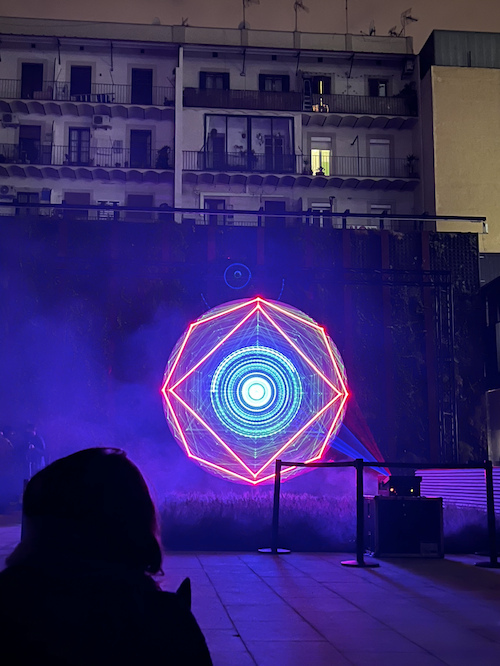
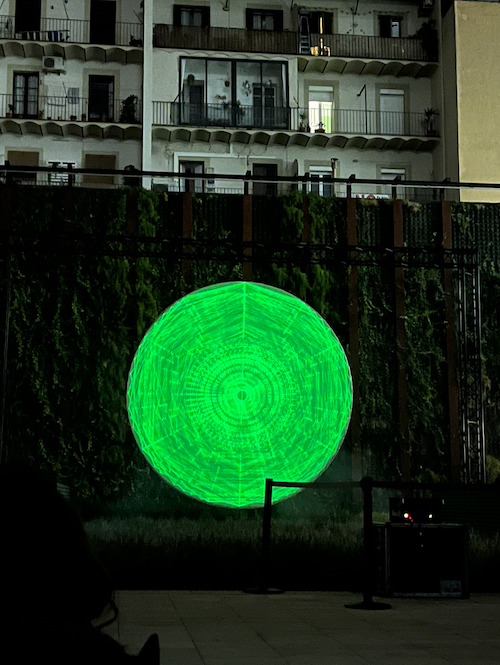
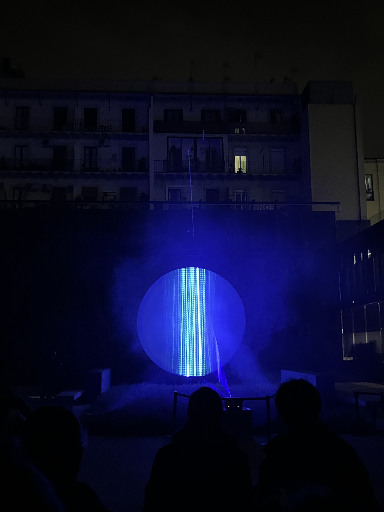

Over the past two weeks, I have been in quarantine and did not have access to my desktop computer which I use to work on. This meant that I found it very hard to work on my initial Design Intervention concept, “Artificial Constellations” with Chris, because I couldn’t meet up with him in person to collaborate properly and couldn’t work remotely to make the visuals for the installation.
Instead, I decided to pursue that project on a longer term to be able to develop it properly, with the right amount of time. As a temporary solution, I created a Miro board for myself and classmates in quarantine as a way of checking in with everybody and reflecting on our current situation. I came up with various introspective questions, each to be answered with a certain medium available on the platform (image, text, sound, drawing…) by the people whom I sent the link to. This was the introductory text in the Miro board.
“A common feeling during isolation is isolation itself, and the blocking out of certain senses because we are permanently in one space. One often feels a lack of stimulation and creativity due to the sudden monotone nature of this unusual lifestyle.
Through this small activity, I want to check in on those who are in isolation. I want us to use our creative skills with the goal of expressing ourselves & stimulating our brains.
The result will be a digital collage which explores and encapsulates our future(s) through alternate presents.”
Here is are the answers given to me:

I would like to turn this into a digital collage, which captures the collective thoughts, desires, feelings and experiences of those who are in quarantine.
--- collage
As I progressed with my work and got new ideas, I documented everything on a new Term 2 Miro board. I quickly realised that I was following different paths within my design interventions, so I created a timeline which represented those various paths.

Llums festival
After my talk with Guillem on Tuesday, I concluded that it was important for me to get outside and go to the Llum festival taking place in Poblenou from Feb 4-6. So on Friday, I had my first night out with some friends and we walked around the neighbourhood, visiting different installations. Some of the lines were super long, so we did not manage to see all of them.
This installation reminded me a lot of the Almost Useless machines project I worked on last trimester, in terms of structure.
More photos of the exhibitions I found interesting, these ones near bau and in Connecthort.
My favourite installation was "Amnesia". I thought the concept was incredibly interesting and well executed. The way the artists mixed something tangible (the photoluminescent fabric) with something intangible (the light) was a great representation of how real life events turn into memories. The patterns were mesmerising and my attention was held onto throughout the full duration.



The progression of the laser being absorbed into the fabric.
I unfortunately did not get to speak to Cristian Rizzutti because I could not find him in the crowd. I hope to meet with him soon and discuss the techniques he uses, along with potential collaborations. It would be very interesting to have the opportunity to talk to a person who is in the exact field which I would like to work in.
Artificial Constellations (progress update)
Recently, I have developed a fascination and appreciation for the stars, which are sometimes hard to see from my window due to the light and city pollution. I have been thinking about how they connect us to a specific point in space and time, and how they can be used as a reference point. I discussed these ideas with Guillem and Chris, and I got some very interesting feedback from the both of them.
I have defined a basic outline of how to design the visual effects on Touchdesigner. Here are both sketches along which screenshots of initial experimentations:
In the meanwhile, Chris produced a four-minute track in Ableton Live to serve as a basis for creative experimentation. You can read more of it on his website, here.
As for the potential narrative possibilities, along with the visual branding, I have come up with several interesting ideas with both Chris and Guillem, during our chats. I liked the idea of getting inspiration from something non-scientific, such as Astrology, which is something so ancient and such a particular visual identity. With Guillem, we discussed how even non-scientific practices have their value, because they are human artifacts, they provide narrative, and are a way of giving our lives meaning.
notes from the discussion with Guillem.
I believe that seeking visual and conceptual inspiration from astrology could be very interesting, especially when combining it with something so contemporary and calculated like Artificial Intelligence. There is definitely much to discuss, both on the concept, narrative and visual identity, but I believe that I am on the right path.
I would like to turn this into a digital collage, which captures the collective thoughts, desires, feelings and experiences of those who are in quarantine.
--- collage
As I progressed with my work and got new ideas, I documented everything on a new Term 2 Miro board. I quickly realised that I was following different paths within my design interventions, so I created a timeline which represented those various paths.
Llums festival
After my talk with Guillem on Tuesday, I concluded that it was important for me to get outside and go to the Llum festival taking place in Poblenou from Feb 4-6. So on Friday, I had my first night out with some friends and we walked around the neighbourhood, visiting different installations. Some of the lines were super long, so we did not manage to see all of them.
Artificial Constellations (progress update)
Recently, I have developed a fascination and appreciation for the stars, which are sometimes hard to see from my window due to the light and city pollution. I have been thinking about how they connect us to a specific point in space and time, and how they can be used as a reference point. I discussed these ideas with Guillem and Chris, and I got some very interesting feedback from the both of them.
I have defined a basic outline of how to design the visual effects on Touchdesigner. Here are both sketches along which screenshots of initial experimentations:
In the meanwhile, Chris produced a four-minute track in Ableton Live to serve as a basis for creative experimentation. You can read more of it on his website, here.
As for the potential narrative possibilities, along with the visual branding, I have come up with several interesting ideas with both Chris and Guillem, during our chats. I liked the idea of getting inspiration from something non-scientific, such as Astrology, which is something so ancient and such a particular visual identity. With Guillem, we discussed how even non-scientific practices have their value, because they are human artifacts, they provide narrative, and are a way of giving our lives meaning.